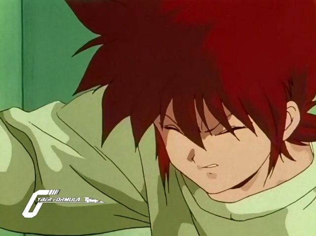

Bienvenue sur le site de la Nobluesky Fansub!
Annonces
Yoru no Yatterman 02 vostfr
Bonsoir à tous!
Voici l'épisode 2 de Yoru no Yatterman.
Une série bien sympa pour l'instant, assez mignonne et bien enlevée. Mais j'ai aussi été chercher le premier épisode de la vieille série, qui reste très drôle malgré son âge d'ailleurs, et que je vous invite à regarder pour mieux comprendre les références en tout genre, même si ce n'est pas indispensable du tout pour suivre l'histoire.
J'espère qu'il vous plaira!
Et au fait, vous en pensez quoi de...
Des nouvelles de Future GPX Cyber Formula!

Des nouvelles fraîches pour cette série qui sera maintenant proposée en Bluray 720p, et remasterisé s'il vous plaît!
Alors pas d'épisode cette semaine à cause de l'adaptation au nouveau format, et de la révision des sous-titres bien sûr. Les épisode déjà terminés seront ajoutés en 720p, et je poursuivrai ensuite la série avec cette superbe qualité!
Pour les anciennes sorties...
Yoru no Yatterman 01 vostfr
Bonsoir à tous!
Voici le premier épisode de Yoru no Yatterman (Yatterman de la Nuit).
Cette série a hérité d'éléments d'histoire d'un animé des années 70, mais peut se regarder indépendamment car les évènements se déroulent bien après l'histoire originale, que je ne connais pas...
Edit : Et une V2, une!
Future GPX Cyber Formula 09 vostfr

Salut à tous!
Voici la suite des aventures d'Hayato, qui est en route pour le Grand Prix Mondial.
Allez aujourd'hui comme je manque de temps pour la news, je vous laisse découvrir le reste ;)
Et n'hésitez pas à faire des remarques dans les commentaires si vous avez des suggestions ou une correction à apporter, c'est toujours utile pour s'améliorer.
Future GPX Cyber Formula 08 vostfr
Salut tout le monde!
Après avoir bien mangé pendant les fêtes (du moins j'espère pour vous que c'était pas des marrons bien lourds!), quoi de mieux que de rester regarder des animés au fond du canapé?
Voici un nouvel épisode de votre série préférée, le premier en cette année 2015.
Nous arrivons au dénouement de la finale du Grand Prix du Japon. Hayato a fort à faire avec les éléments et les autres pilotes....